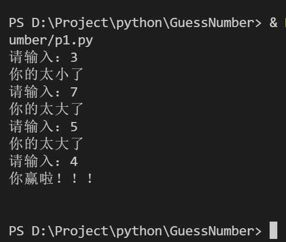
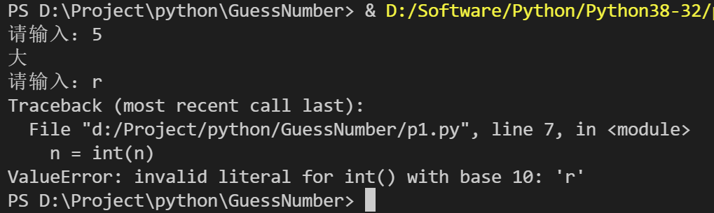
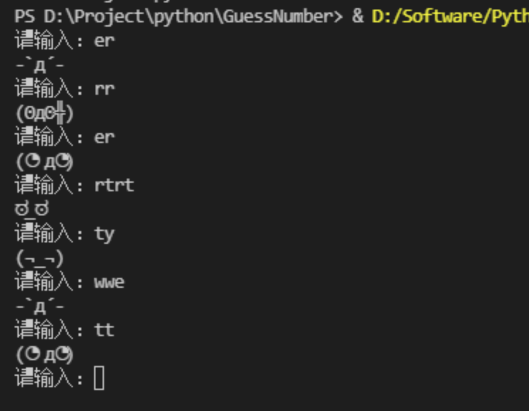
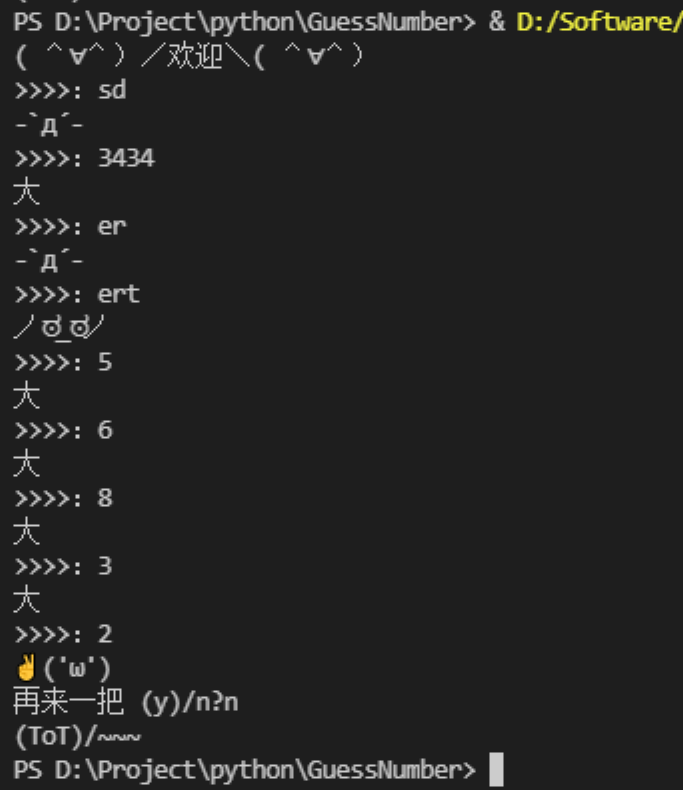

小孩又闹着不去幼儿园了，我得想个办法让他体会到学习的快乐和意义……
带娃真难
玩了一个周末，玩舒服了，周一起床后，一听要去学校，就不干了，死活不去，对我们各种撒（威）泼（逼）打（利）滚（诱），实在招架不住，只能妥协了，虽然我可以扛起他，塞进校车里，但受过良好教育（疏于管教）的我不会这么做的，于是打算请个假，好好教育一下，不让此类事件再次发生，如何操作呢……
小家伙一看我妥协了，就像通了电的马达，立马活奔乱跳了起来，拿出各种玩具，拉着我陪他一起玩~ 哎
不一会儿，看见我玩的心不在焉，一直看手机（得看看老板有没找事呀），跑过来，说：“爸爸，我要玩你手机上的游戏……”
不去上学还要玩游戏，我这个气就不打一处来呀，正要发作，转念一想，有了
转怒为喜，“你是想玩游戏呀，不如咱们一起做个游戏玩，好不好？”
“好呀，好呀……”，孩子边说着，迫不及待地跑去将自己要做游戏的事告诉奶奶
我一看有门，打开电脑，叫他过来，编写他人生的第一个游戏，说不定，他以后是个游戏开放大神呢，我的天呐……
孩子一看能和爸爸一起编程玩，兴奋极了，因为平常只有我一趴在电脑上，就让他滚的远远的~
灵感乍现
前两天，我和他玩了一个猜数字的游戏，在纸上写个数字，然后让对方猜，猜错提示大了还是小了，一般有猜三次猜的机会，不如就做实现这个，不错
有了思路实现就简单了，随机产生一个 10 以内的数字，然后提示输入，判断大小给出提示，然后继续，第一版代码如下：
1 | import random |
赶紧试试，效果还不错哈哈

迭代……
然后让孩子自己玩一下，开始还不知道按哪个键，也不知输入后需要按回车，教会他后，他小心翼翼地玩了起来
v0.2
不过问题来了，上幼儿园的孩子，不认识字，于是趁机教了他认识 “大” 和 “小”，在修改一下提示，把 “你的太大/小了”，直接改成，“大” 和 “小”，以便他能分辨清楚，至于其他的就让他猜吧
现在他可以自己玩了，太有成就感了，主要是因为教会了他两个字，哈哈，我真是天才~
v0.3
“爸爸，这是什么意思？”，孩子的一句话把我拉了回来，定眼一瞧，原来出错了

他输入了一个非数字，代码将其转化为整数时出错了，小菜一碟，加个判断就好了
不过还可以加些好玩的东西，于是做了如下改善：
1 |
|
-
首先去网上找一下 愤怒的文字表情，找一下有意思的，作为随机表情列表；
-
然后用字符串函数
isdecimal判断输入是否为数字，如果不是就重新输入
改善后玩起来好多了：

不过，现在画风变成了他故意输错 （─.─||）
v0.4
突然，孩子又说 “爸爸，游戏坏了~”
又出什么 bug 了，凑近一看，哈哈，原来他偶尔猜对了，程序结束，不能玩了
这可不行，退出了还得让我重启，这得改，一顿折腾，好了：
1 | import random |
-
首先将原来的代码封装为一个函数
game -
然后写一个死循环，其中先调一下
game，即，一上来游戏就开始 -
结束之后询问是否继续
逻辑很简单
这下他能玩好久了哈哈

v0.n
正想拿起手机刷刷视频，就听见孩子说：“爸爸，怎么退出……”
我去…… 客户又加需求了……
就这样，可以一直迭代下去，孩子参与其中乐此不疲……
总结
那一天在游戏中愉快的度过了，孩子已经开始愿意去幼儿园了
是因为我引导的好吗？还是因为创作游戏激发了他学习的兴趣？
其实都不是，至少说不是主要的原因，我觉得最重要的是，他 感受到了全情投入的陪伴，感受到了安全感和关爱，还有参与其中的价值感
现在，让我们每个人都像高速旋转的陀螺，对身边的人的缺乏关爱和陪伴
无论你给他们什么物质上的补偿，都不如真切地陪伴，而我们自己也从中得到了认可和价值感
当然，如果你会编程，能写游戏，会更好玩~ 比心